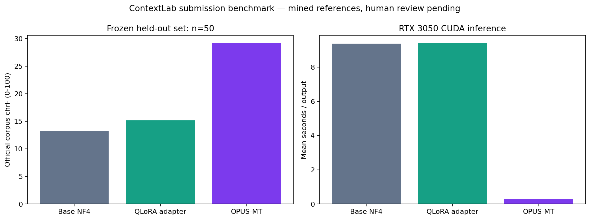
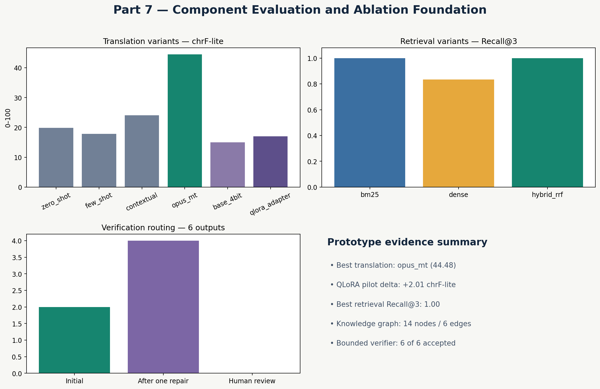

Author: Vignesh Balamurugan M.B
Submission edition: 26 October 2026 | Demonstration: 27 October 2026
Repository: https://github.com/mbvb1312/Context-Lab
Deployed interface: https://contextlab-tamil-localization.blackpearlmark1.chatgpt.site/
ContextLab is an eight-module academic software prototype for English-to-Tamil localization. The project studies how data preparation, parameter-efficient model adaptation, narrative retrieval, explicit graph facts and bounded verification can be combined in an inspectable workflow. A complete Samanantar Tamil source scan covers 5,264,867 sentence pairs. A frozen research edition contains 4,974 accepted pairs, with 3,980 used for a real CUDA-only QLoRA training epoch on an RTX 3050 4 GB laptop GPU. The final adapter is saved and recoverable from GitHub.
The submission adds a frozen 50-example held-out comparison, a real 12-chapter English narrative corpus, a custom-input browser workspace, local GPU translation endpoints, container execution evidence and 48 automated tests. The interface exposes outputs, provenance and decisions. Native-Tamil judgement and final long-form language-quality claims remain outside the completed automated evidence.
An isolated sentence can be grammatically translated while losing the intended character relationship, name, register or approved terminology. A long-form localization system therefore needs access to earlier content and structured facts, as well as a way to inspect questionable output.
The objective is to build and evaluate the components of that workflow within a student's laptop compute budget. The implemented components are: data engineering, prompting baselines, QLoRA adaptation, hybrid RAG retrieval, graph memory, bounded verification, component evaluation and application delivery.
There are three distinct execution modes. The hosted portfolio lets a visitor explore saved model experiments and run fresh browser BM25 retrieval and deterministic draft verification. The local FastAPI application additionally generates new translations using the laptop GPU. The slim Docker image runs the API and website without model inference dependencies. These modes are labelled in the user interface.
In context-enabled QLoRA mode, the live endpoint inserts positive-scoring retrieved chunks, applicable approved demo graph facts and glossary entries into the prompt. A toggle disables that context for an ablation. OPUS-MT remains source-only. Chapter mention candidates are never promoted into approved prompt facts. The integrated workflow runs, but long-form language-quality improvement has not been established.
| Planned part | Implemented evidence | Remaining validation |
|---|---|---|
| 1. Dataset and EDA | Full source scan, quality filters, frozen splits, charts and hashes | Independent Tamil review |
| 2. Prompting baselines | Zero-shot, few-shot, contextual Qwen and OPUS-MT outputs | Larger reviewed prompting study |
| 3. LoRA / QLoRA | Full 995-step CUDA epoch, saved adapter, validation loss, paired evaluation | Stronger Tamil model benchmark |
| 4. Hybrid RAG | BM25, dense embeddings, RRF, hard distractors; real chapter corpus | Human semantic relevance labels and reranking |
| 5. Graph memory | Validated typed demo graph, evidence IDs, Cypher; chapter mention candidates | Human approval of extracted relations; optional live Neo4j |
| 6. Verification | Non-empty, Tamil script and approved glossary gates, one repair, full recheck | Human meaning, fluency and tone review |
| 7. Evaluation | Component matrix, official chrF, 50-example frozen comparison, bootstrap interval | Reviewed long-form end-to-end ablation |
| 8. Delivery | Responsive UI, custom inputs, FastAPI, CUDA endpoint, Docker run, tests and GitHub | Production hardening beyond academic scope |
Completion means a runnable, documented academic software prototype. It does not mean every research hypothesis is proven or every Tamil output is correct.
The source is the ai4bharat/Samanantar Tamil subset: four official Parquet shards, 753,886,808 bytes, and 5,264,867 English-Tamil rows. A seed-42 reservoir sampler scans the complete source and selects 5,000 records. Unicode NFC normalization, whitespace cleanup, source/target script checks, suspicious length-ratio rejection and pair deduplication leave 4,974 records. Twenty-six records are rejected, yielding 99.48% acceptance.
The deterministic split is 3,980 training, 497 validation and 497 test records. Instruction-tuning records retain pair hashes and source-row provenance. The source is mined sentence alignment data; acceptance by a script is a technical quality filter, not human certification of a correct translation. Samanantar carries a CC BY-NC 4.0 licence in the recorded source documentation and this project is academic/non-commercial.
The new held-out subset is selected by sorting test IDs by SHA256 of a fixed experiment prefix plus the ID. The first 50 eligible records are frozen before generation. Exact pair overlap and normalized source overlap against both training and validation are excluded. Five of the original 497 test rows share a source with the other splits, leaving 492 eligible rows. No selection based on model output or translation score is performed. The selected JSONL and its hash are included.
Zero-shot, few-shot and contextual prompting use Qwen/Qwen2.5-0.5B-Instruct. They are three prompting strategies over the same model, rather than three different models. Helsinki-NLP/opus-mt-en-dra is the dedicated Marian translation comparator; the target prefix is >>tam<<. It translates English to Tamil without the project's narrative context or graph memory.
The Qwen base is quantized to 4-bit NF4 with double quantization and FP16 compute. Rank-8 LoRA adapters update the attention and feed-forward projection modules while the quantized base remains frozen. Completion-only loss masking excludes prompt tokens from supervised loss. The run uses gradient checkpointing, gradient accumulation and paged AdamW 8-bit to fit the available GPU.
| Training measurement | Recorded value |
|---|---|
| GPU | NVIDIA RTX 3050 Laptop GPU, 4 GB |
| Device | cuda:0; CPU fallback disabled |
| Training records | 3,980; zero overlength skips |
| Epochs / optimizer steps | 1 / 995 |
| Trainable parameters | 4,399,104 / 319,518,592 visible to PEFT |
| Trainable share | 1.3768%; 98.6232% frozen |
| Duration | 3,575.05 seconds, approximately 59m35s |
| Peak CUDA allocation | 2.979 GiB |
| Training / validation loss | 1.3320 / 1.2441 |
The parameter denominator is the count reported by the quantized PEFT model, not a claim that the original Qwen checkpoint has only 319.5M unquantized parameters. The saved adapter is approximately 17.6 MB and is included in the recovery repository.
The six-example controlled demonstration compares zero-shot Qwen (19.82 chrF-lite), contextual Qwen (24.08 chrF-lite) and OPUS-MT (44.48 chrF-lite). Contextual prompting changes overlap by +4.27 points or +21.52% relative. OPUS-MT is the stronger sentence comparator on this small set. The saved QLoRA adapter changes official corpus chrF from 15.6184 to 20.1176, a +4.4992-point or +28.81% relative change.
These are separate comparisons: chrF-lite prompting results and official SacreBLEU adapter results must not be merged into one ranking. Six project-authored references are pending native review. Overlap scores alone cannot establish correct meaning, style or cultural naturalness.
| System | Official corpus chrF | Mean latency (s) |
|---|---|---|
| base_4bit | 13.2347 | 9.3815 |
| qlora_adapter | 15.1874 | 9.3956 |
| opus_mt | 29.1305 | 0.2977 |
On this frozen held-out set, the adapter changes corpus chrF by +1.9527 points (+14.75% relative). The paired bootstrap 95% interval is [0.7519, 3.4623] chrF points. The earlier six-example +28.81% result is retained as historical evidence and is not substituted for this larger test.
The larger test also exposes limitations. Adapter mean latency is 9.3956 seconds versus 9.3815 seconds for the base, so it does not demonstrate a speed gain. On the seven sources containing numbers, mean numeric preservation falls from 0.2500 to 0.1786 for the adapter, while OPUS-MT reaches 0.7000. These are useful failure signals and justify a stronger model and targeted number-preservation work. OPUS-MT reaches 29.1305 corpus chrF and remains the stronger sentence comparator.
All three systems use the same 50 mined references, deterministic generation and a 128-token output cap. The capped setting is part of the experiment, so longer outputs may be incomplete. The benchmark saves each source, reference, hypothesis, latency, script ratio, number-preservation value and review fields. Numeric examples are counted explicitly; examples without numbers are reported as not applicable.
The paired interval resamples 50 source IDs with replacement 1,000 times using seed 42 and recomputes the difference in corpus chrF. It is an interval conditional on this selected sample and these mined references; it is not a measure of human quality or proof of generalization to all Tamil writing. A positive interval would support an overlap improvement under this setting. If it crosses zero, that uncertainty must be retained.
The original controlled retrieval benchmark contains six relevant narrative chunks and eight hard distractors. Hybrid RRF Recall@3 is 100%, compared with 83.33% for dense retrieval, a +16.67 percentage-point change. BM25 also reaches 100% Recall@3; hybrid does not beat BM25 on this fixture. The appropriate next comparison is a larger human-labelled semantic query set.
The new corpus is Lewis Carroll's Alice's Adventures in Wonderland from Project Gutenberg, with the complete attribution and source notice retained. Twelve chapters become 152 chunks of up to 220 words with 40-word overlap. Forty automatically generated verbatim excerpt queries achieve Recall@3 = 1.00 and MRR = 1.00 with BM25. This is a source-lookup stress check with automatically derived relevant IDs, not a semantic RAG benchmark.
The approved demonstration graph contains 14 typed nodes and six edges, with zero validation errors and warnings. The new book adds 12 Chapter nodes, six candidate entity nodes and 26 candidate mention edges. Those mentions remain pending human approval; their presence does not establish character relationships. Live Neo4j is an optional storage extension; the working graph and queries use local JSON.
Two of the six OPUS-MT demonstration outputs pass the initial checks. Four are repaired once using explicitly approved terminology replacements, then all checks are rerun. The final gate acceptance is 6/6, or 100%, compared with 2/6, or 33.33%, initially. This is a +66.67 percentage-point change in rule compliance, not a translation accuracy score.
The complete automated suite passes 48/48 with no skipped tests. It covers data quality, splitting, prompts, metrics, QLoRA configuration, BM25 edge cases, graph validation, glossary word boundaries, API input limits, opt-in GPU execution and busy-GPU handling. API unit tests use a test double for generation; a separate real-CUDA endpoint smoke test provides runtime evidence.
The Docker image was built and executed successfully; health, status, real-chapter retrieval, glossary repair and the custom-input website passed HTTP checks. A real local request generated a new translation on cuda:0 with engine opus_mt, then returned retrieval evidence and verification checks. Browser checks also exercise repair and failed-script routing.
Precision asks what fraction of generated character n-grams are found in the reference. Recall asks what fraction of reference n-grams are recovered by the generated text. chrF averages character n-gram precision and recall over orders 1 through 6, then combines them with F-beta. For beta = 2, F = 5PR / (4P + R). Recall receives more weight. If P = 0.8 and R = 0.6, F = 2.4 / 3.8 = 0.6316, or 63.16 on the 0-100 scale.
Character overlap suits Tamil's changing word endings better than an exact whole-word match alone, but a sentence can share many characters and still have incorrect meaning. Official SacreBLEU chrF provides a standardized implementation; chrF-lite is an explicitly labelled local teaching/early-development approximation. Neither score is a percentage of correctly translated sentences.
Recall@3 is the fraction of relevant chunks present among the first three results. In the original single-relevant-chunk fixture, finding the correct chunk within three results on five of six queries gives 5/6 = 83.33%. MRR averages 1/rank of the first relevant chunk. Ranks 1, 2 and 3 yield reciprocal ranks 1, 0.5 and 0.333. Recall measures coverage; MRR also rewards placing the evidence earlier.
Latency is wall-clock generation time with CUDA synchronization in the new benchmark. Mean latency describes the tested hardware and settings; warm caches, first-load cost, decoding length and shared GPU activity affect it. GPU allocation measures tensor memory reported by PyTorch, rather than total board memory shown by nvidia-smi.
Relative percentage change is (new - old) / old x 100. The earlier adapter comparison is (20.1176 - 15.6184) / 15.6184 x 100 = 28.81%. A change from 83.33% to 100% is 16.67 percentage points, while its relative percentage change is approximately 20%. The report uses those units deliberately.
Training loss measures the model's average prediction error on supervised completion tokens. Validation loss evaluates the same objective on held-out validation examples. Lower loss can indicate better next-token prediction but does not directly equal Tamil translation accuracy. A separate test set and human rubric are still needed.
Open the hosted interface to inspect evidence, enter custom text, retrieve chapter chunks, verify Tamil drafts and export a JSON trace. The hosted website currently requires the owner's ChatGPT sign-in. Its static hosting cannot execute a laptop GPU model. Run START_CONTEXTLAB.cmd on the laptop or scripts/run_submission_demo.ps1 for the local CUDA version at http://127.0.0.1:8765/.
The FastAPI service provides /health, /api/status, /api/retrieve, /api/graph, /api/graph/facts, /api/verify, /api/benchmark and /api/localize. Interactive API documentation is at /docs. Local inference is opt-in, rejects requests without CUDA, serializes GPU ownership and returns 429 when another generation is in progress. Requests validate input lengths. The server binds loopback for the presentation.
The Dockerfile packages the API, data, reports and website into Python 3.11-slim. It excludes raw multi-million-row data, model caches, installed vendors and intermediate checkpoints from its build context. The image intentionally excludes GPU model dependencies; it demonstrates API portability rather than GPU-container deployment.
GitHub preserves source, processed research data, reports, site source, the final adapter and restoration instructions. Base-model caches, raw Samanantar shards and installed packages are downloaded again on a new SSD. The submission ZIP includes the unique project artifacts and a checksum manifest; an offline site ZIP provides a presentation fallback without model weights or authentication.
Start with the problem: a sentence may depend on earlier story context. Show the visual architecture, then the CUDA training manifest. In the workspace, search for the White Rabbit and inspect the chapter IDs. Load the wedding example, inspect its glossary repair, and replace the draft with English-only text to demonstrate human-review routing. In the local version, generate a fresh translation on the RTX 3050 and show the returned device and timings. Finally show the held-out table and the explicit research limitations.
When asked why a small Qwen model was chosen, explain the 4 GB GPU constraint and parameter-efficient feasibility experiment. When asked why OPUS-MT can outperform a fine-tuned LLM, explain that a specialized translation model is trained for that task, while the tiny instruction model has limited Tamil capability. Model complexity is not evidence of better translation.
When asked what is original, describe the system design, reproducible data and training workflow, evidence traces, bounded verifier, evaluation and deployment integration. The public base models and dataset are credited. Do not claim to have created a foundation model or proven a new state-of-the-art translation algorithm.
The software is suitable for an academic prototype submission with its limitations stated. Completion of human language evaluation requires a fluent/native Tamil reviewer to score meaning, fluency, register and entity consistency. The review CSV is prepared with blank scores and reviewer fields; no human review is invented. The real English narrative corpus closes the missing-source-corpus task, but paired Tamil chapters and human semantic relevance labels are still required for final long-form evaluation.
A stronger Tamil-capable model and a reranking study remain research extensions. A 3B-8B experiment may require a larger external GPU; this run did not purchase cloud compute or silently substitute CPU training. Approved relation extraction from real chapters and optional Neo4j import also remain. These are recorded as future work rather than hidden behind the software completion count.
Submission statement: ContextLab delivers eight runnable software modules, an auditable GPU-trained adapter, controlled and held-out experiments, a working custom-input interface, API and container evidence, and reproducible source. It is an evaluated engineering prototype; final human-validated Tamil and long-form research conclusions are pending.
• Samanantar dataset: https://huggingface.co/datasets/ai4bharat/samanantar
• Dataset paper: https://aclanthology.org/2022.tacl-1.9/
• Qwen base model: https://huggingface.co/Qwen/Qwen2.5-0.5B-Instruct
• OPUS-MT comparator: https://huggingface.co/Helsinki-NLP/opus-mt-en-dra
• Real narrative source: https://www.gutenberg.org/ebooks/11
• Standardized evaluation implementation: https://github.com/mjpost/sacrebleu
• Full training manifest: reports/part3_full_training/training_manifest.json
• Frozen benchmark and outputs: reports/submission_benchmark/
• Corpus manifest and lookup evidence: reports/longform/
• Test, browser, API and Docker evidence: reports/submission_validation/
• Guide materials and review tasks: SHOW_TO_GUIDE/

